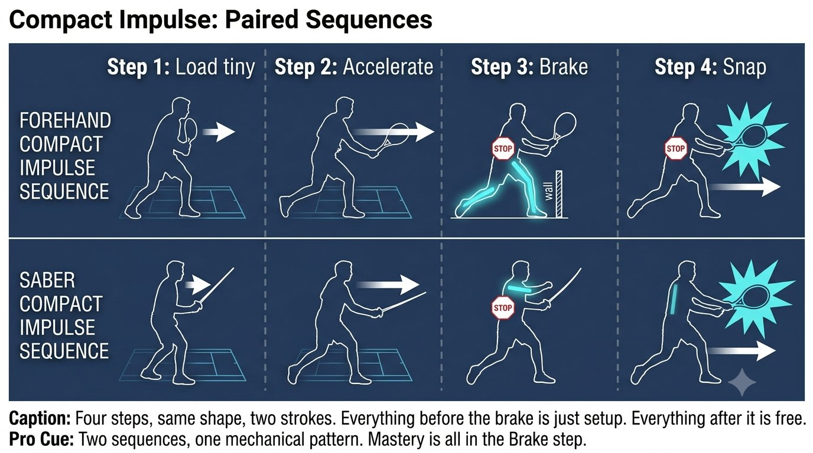
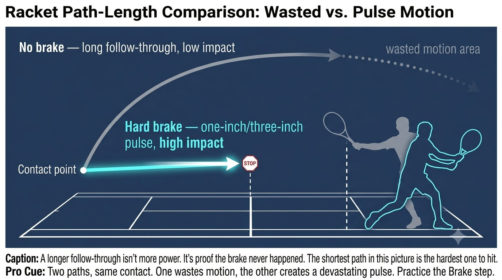

Chapter 15: Braking and Impulse
(English version of Chapter 15 in the United Tennis Handbook)
CHAPTER 15

Figure 1
BRAKING & IMPULSE
The 1-Inch Pulse / Fa Jin (Brake, Pulse)
Power was never about how far you swing. It's impulse — a short amount of time carrying massive force. Braking is the power.
To make the racket head explode off a short backswing, you accelerate the body, then brake it suddenly. The energy has to go somewhere — it shoots into the next link in the chain.
— Henry Pham
The Physics: Impulse Equals Braking
Power in tennis was never about how far you swing. It's impulse — force multiplied by time, but delivered in a very short window. Like cracking a whip: the handle stops, and the tip snaps.
The Principle
Figure 15.1: A whip stops at the handle — and the tip explodes. Your body works the same way: the front leg and torso are the handle, the racket head is the tip. Hard brake = massive impulse.

Figure 2
Braking is the power. No braking means you need a long, loopy swing just to build speed. Hard braking means a short swing with high impact.
Forehand Push: Compact Impulse
Instead of a big loop, think in four steps:
1. Load tiny: the elbow stays in front of the body, and the racket head sits only about 12 inches behind the hand. The spiral line stretches, but it stays short.
2. Accelerate the legs and hips: the back foot pushes and the hips start to open.
3. Brake: the front leg straightens and stomps, and the front hip hits a wall. The obliques fire to stop the torso's rotation abruptly. You should feel the front leg and the abs go suddenly tight — that's your brake.
4. Snap: because the torso stopped, the arm and racket are forced to whip through. The palm-push feeling becomes a pulse — one inch of penetrating push, not a long follow-through.
Coach's Note
Common error #1: "admiring the ball" — the head lifts and the torso keeps rotating. Brake first, then release the eyes. The rule is feet first, hands second.
Backhand Saber: Compact Impulse
This one is an even sharper one-inch punch:
1. Load tiny: the racket stays close, the elbow high but tucked near the body. The lat stretches.
2. Accelerate: the back leg drives and the hips open slightly.
3. Brake: the front leg brakes while the chest stays side-on — never let the chest open to the net. Braking the chest is what makes the saber snap.
4. Snap: the lat and tricep snap the edge through. The feel is a short downward chop, three inches through the ball, then stop — never a long follow-through.
Coach's Note
The saber impulse is an even sharper "one-inch punch" than the forehand. Follow through long and you didn't brake — that's just an arm swing, no impulse. The feel is a short downward chop, three inches through the ball, then stop. The racket finishes high, but you stopped the motion.
Figure 15.2: Two strokes, four identical steps. Load tiny, accelerate the legs, brake the torso, let the arm snap. The brake is the only thing that's different — forehand brakes the hip, saber brakes the chest.

Figure 3
Why This Works With Everything Built So Far
Figure 15.3: Same contact point, two paths. The long arc is where energy goes to die — a long follow-through with no brake. The short path ends at the stop marker — that's where the impulse lives. The shorter path hits harder.
The Rule
The one-inch pulse isn't a swing. It's a brake followed by a release. Brake hard, and let the fascial line snap.
Training the One-Inch Pulse — No Big Court Needed
1. Wall push pulse: stand one inch from a wall, racket butt touching it, palm behind. With no takeback at all, push so the butt cap dents the wall and immediately release. Feel the spiral line fire from foot to palm — no arm involved.
2. Front-leg brake drill: shadow-swing a forehand, focusing only on the front leg. As you swing, the front knee extends hard and you say "stop." The racket should crack after the stop, never before — if it moves before the stop, there's no impulse.
3. Saber stop drill: hit a backhand and freeze the racket 12 inches after contact. Don't let it wrap around. Stopping that fast means you braked correctly. Failing to stop means you swung long with no braking at all.
4. Pulse regulation: a partner calls out "20%, 50%, 100%." You keep the same tiny load and the same brake, only changing the pulse intensity. 20% is a tiny pulse. 100% is a tiny pulse plus a hard brake. Pull the racket way back for the 100% ball and you've lost it — a big takeback isn't power, it's just a slow 8.
The Rule
A small load, a hard brake, and a one-inch pulse produce more impact, take less time, and leave less room for anything to go wrong.
The One-Inch Pulse Checklist
SMALL LOAD. HARD BRAKE. ONE-INCH PULSE.
– Takeback: a tiny load, racket head only 12 inches behind the hand.
– Accelerate: the legs and hips initiate the motion.
– Brake: the front leg straightens and stomps, the front hip hits a wall, the obliques stop the torso.
– Snap: because the torso stopped, the arm and racket whip through — the palm push becomes a pulse.
– Pulse: one inch of penetrating push, never a long follow-through.
– If the front knee collapses after the hit, the root was lost and there's no pulse.
– Train with: the wall pulse, the front-leg brake drill, the saber stop drill, and the regulation drill.
Where This Leads
This chapter establishes brake plus pulse — fa jin — as the variable in Q-V-ROOT-8-45-Impulse-Jin CORE. Chapter 16 covers jin as the three manifestations: ting, hua, and fa. Chapter 17 covers empty-full footwork switching. Chapter 18 covers rooting.